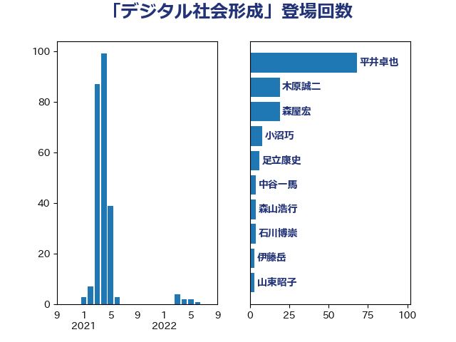

単語「デジタル社会形成」

| 平井卓也 | 自由民主党 | 68 回 |
| 木原誠二 | 自由民主党 | 19 回 |
| 森屋宏 | 自由民主党 | 19 回 |
| 小沼巧 | 立憲民主党 | 8 回 |
| 足立康史 | 日本維新の会 | 6 回 |
| 中谷一馬 | 立憲民主党 | 4 回 |
| 森山浩行 | 立憲民主党 | 4 回 |
| 石川博崇 | 公明党 | 4 回 |
| 伊藤岳 | 日本共産党 | 3 回 |
| 山東昭子 | 自由民主党 | 3 回 |
| 本田太郎 | 自由民主党 | 3 回 |
| 柴田巧 | 日本維新の会 | 3 回 |
| 丸川珠代 | 自由民主党 | 2 回 |
| 古賀友一郎 | 自由民主党 | 2 回 |
| 大西健介 | 立憲民主党 | 2 回 |
| 平木大作 | 公明党 | 2 回 |
| 平林晃 | 公明党 | 2 回 |
| 後藤祐一 | 立憲民主党 | 2 回 |
| 森田俊和 | 立憲民主党 | 2 回 |
| 牧島かれん | 自由民主党 | 2 回 |
| 菅義偉 | 自由民主党 | 2 回 |
| 高木毅 | 自由民主党 | 2 回 |
| 上川陽子 | 自由民主党 | 1 回 |
| 中山展宏 | 自由民主党 | 1 回 |
| 古屋範子 | 公明党 | 1 回 |
| 吉田忠智 | 立憲民主党 | 1 回 |
| 大口善徳 | 公明党 | 1 回 |
| 岡本あき子 | 立憲民主党 | 1 回 |
| 岸真紀子 | 立憲民主党 | 1 回 |
| 本村伸子 | 日本共産党 | 1 回 |
| 松本剛明 | 自由民主党 | 1 回 |
| 橋本聖子 | 無所属 | 1 回 |
| 櫻井周 | 立憲民主党 | 1 回 |
| 武田良太 | 自由民主党 | 1 回 |
| 田村智子 | 日本共産党 | 1 回 |
| 神田憲次 | 自由民主党 | 1 回 |
| 羽田次郎 | 立憲民主党 | 1 回 |
| 藤井比早之 | 自由民主党 | 1 回 |
| 高橋光男 | 公明党 | 1 回 |